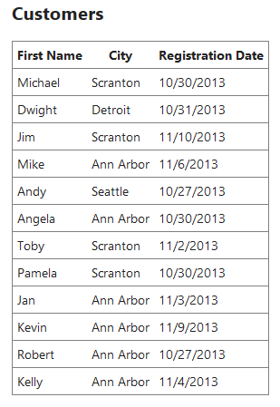

There are a lot of ways to add the "Paging-Sorting-Filtering" functionality to the tabular displays in an ASP.NET MVC pages using different plugins or libraries. In this post i am going to explain how to bring Paging, Sorting and Filtering to your ASP.NET MVC Projects using the kTable jQuery plugin.
Let's start by creating a blank MVC Project. I am assuming that the readers know how to create an MVC web project and add a new action method and it's associated view to it. I have my HomeController which has an Index action which shows a list of customers in a table format. So my code looks like this.
Home Controller
public class HomeController : Controller
{
readonly CustomerService customerService;
public HomeController()
{
customerService = new CustomerService();
}
public ActionResult Index()
{
var customerList = customerService.GetCustomers();
var customerListVM = new CustomerListViewModel { Customers = customerList };
return View(customerListVM);
}
}
You can see that i am creating an object of CustomerService class in our constructor which i will be using in our action methods later. CustomerService is a service class which provides data. For demo purpose, I hardcoded the data in this class. You may replace it with data from other data sources like web service/database/xml etc..
Customer Service
public class CustomerService
{
public List<Customer> GetCustomers()
{
return new List<Customer> {
new Customer { FirstName = "Michael", City = "Scranton", RegistrationDate = DateTime.Today.AddDays(-45) },
new Customer { FirstName = "Dwight", City = "Detroit", RegistrationDate = DateTime.Today.AddDays(-44) },
new Customer { FirstName = "Jim", City = "Scranton", RegistrationDate = DateTime.Today.AddDays(-34) },
new Customer { FirstName = "Mike", City = "Ann Arbor", RegistrationDate = DateTime.Today.AddDays(-38) },
new Customer { FirstName = "Andy", City = "Seattle", RegistrationDate = DateTime.Today.AddDays(-48) },
new Customer { FirstName = "Angela", City = "Ann Arbor", RegistrationDate = DateTime.Today.AddDays(-45) },
new Customer { FirstName = "Toby", City = "Scranton", RegistrationDate = DateTime.Today.AddDays(-42) },
new Customer { FirstName = "Pamela", City = "Scranton", RegistrationDate = DateTime.Today.AddDays(-45) },
new Customer { FirstName = "Jan", City = "Ann Arbor", RegistrationDate = DateTime.Today.AddDays(-41) },
new Customer { FirstName = "Kevin", City = "Ann Arbor", RegistrationDate = DateTime.Today.AddDays(-35) },
new Customer { FirstName = "Robert", City = "Ann Arbor", RegistrationDate = DateTime.Today.AddDays(-48) },
new Customer { FirstName = "Kelly", City = "Ann Arbor", RegistrationDate = DateTime.Today.AddDays(-40) }
};
}
}
In our Index action method, we are calling the GetCustomers method to get a list of customers and setting that as the Customers property of our CustomerListViewModel instance. CustomerListViewModel class looks like this
public class Customer
{
public int ID { set; get; }
public string FirstName { set; get; }
public string City { set; get; }
public DateTime RegistrationDate { set; get; }
}
public class CustomerListViewModel
{
public List<Customer> Customers { set; get; }
public CustomerListViewModel()
{
Customers = new List<Customer>();
}
}
Our Index view is strongly typed to the CustomerListViewModel. In this view, we have some simple code to display the data in an HTML table.
@model ASPNETMVCFitlerSortingWithKTable.Models.CustomerListViewModel
<h2>Customers</h2>
<div>
<table>
<tr>
<th>First Name</th>
<th>City</th>
<th>Registration Date</th>
</tr>
@foreach(var customer in Model.Customers)
{
<tr>
<td>@customer.FirstName</td>
<td>@customer.City</td>
<td>@customer.RegistrationDate.ToShortDateString()</td>
</tr>
}
</table>
</div>
Now when we run the app, We will see all the customers in an HTML table.

To add paging, the first thing to do is to add a new class to our project to represent the paging details. This class will have properties like BaseUrl,CurrentPage,HasNextPage etc...
public class PagingDetails
{
public string BaseURL { get; set; }
public int CurrentPage { get; set; }
public bool HasNextPage { get; set; }
public bool HasPrevPage { get; set; }
public int QryStrID { get; set; }
public string QryStrType { get; set; }
public int TotalPages { get; set; }
public int TotalRecords { get; set; }
}
Now we will create a new partial view which has the markup for the paging information. Let's call this view as "TablePagingFooter.cshtml" and save it in the Views/Shared folder.
@model ASPNETMVCFitlerSortingWithKTable.Models.PagingDetails
@{
string baseurl = ViewData["baseurl"].ToString();
}
<div class="pagingFooterLeft">
Total @Model.TotalRecords @(Model.TotalRecords> 1 ? "Records in" : "Record in") @Model.TotalPages @(Model.TotalPages>1? "pages":"page")
</div>
<div class="pagingFooterRight">
@for (int i = 1; i <= Model.TotalPages; i++)
{
if (Model.CurrentPage == i)
{
<span class="page-number currentPage">@i.ToString()</span>
}
else
{
<a class="gridPageNumber" title="@i.ToString()" href="@baseurl&page=@i.ToString()">
<span class="page-number">@i.ToString()</span>
</a>
}
}
</div>
Let's update our CustomerListViewModel viewmodel to have a property for the PagingDetails.
public class CustomerListViewModel
{
public List<Customer> Customers { set; get; }
public PagingDetails PagingDetails { set; get; }
public CustomerListViewModel()
{
Customers = new List<Customer>();
PagingDetails = new PagingDetails();
}
}
Now we will go to our Index action method and make some changes there to handle the paging. Since the paging is going to be a common functionality which we need to use across all our listing screens, We will keep this functionality in a common class from which we will inherit our controllers. We will create a new class called BaseController in our Controllers folder.
public class BaseController : Controller
{
protected void ApplyPagingInformation(int pageNumber, int pageSize, PagingDetails pagingDetails, int totalRowCount)
{
pagingDetails.TotalRecords = totalRowCount;
pagingDetails.CurrentPage = pageNumber;
int nextPageItemCount = pagingDetails.TotalRecords - (pageSize * pageNumber);
pagingDetails.HasNextPage = (nextPageItemCount > 0);
pagingDetails.HasPrevPage = (pageNumber > 1);
var reminder = pagingDetails.TotalRecords % pageSize;
pagingDetails.TotalPages = (pagingDetails.TotalRecords / pageSize);
if (reminder > 0)
pagingDetails.TotalPages++;
}
}
Update the HomeController class to inherit it from BaseController.
Now we will include the Partial view in our index view , just below the HTML table closing tag.
<div id="tblFooter" class="divtblFooter">
@Html.Partial("TablePagingFooter", Model.PagingDetails, new ViewDataDictionary { {"baseurl",Url.Action("Index","Home")+"?c"}})
</div>
Now when your run the app, you can see that there is a new div just below our HTML table with the paging information. It shows how many total records we have, how many total pages and all navigable page numbers on the right side. (I have added some custom styling for the paging div)
We are using the kTable plugin for sorting and filtering. kTable is a tiny jQuery plugin which will make some changes to our HTML table markup to include some sort-filter options to our table headers.
Go and download the latest version of kTable plugin from github and include that in your projects Scripts folder. You need to add the images folder and css file as well (to your Contents folder). Once you are done with that, update your index view or layout page to include jquery.ktable.jsand ktable.css files.
Next step is to add "filterable" css class to the columns where we need filtering feature. By default, kTable will convert all your table headers with the css class filterable to filterable columns. If the column for showing a date time value, add an HTML5 data attribute called "datatype" with value as date. We will invoke the ktable plugin on our table element also.
The updated markup of index view will be like this now.
@model ASPNETMVCFitlerSortingWithKTable.Models.CustomerListViewModel
<h2>Customers</h2>
<div>
<table>
<tr>
<th class="filterable">First Name</th>
<th class="filterable">City</th>
<th class="filterable" datatype="date">Registration Date</th>
</tr>
@foreach(var customer in Model.Customers)
{
<tr>
<td>@customer.FirstName</td>
<td>@customer.City</td>
<td>@customer.RegistrationDate.ToShortDateString()</td>
</tr>
}
</table>
</div>
<div id="tblFooter" class="divtblFooter">
@Html.Partial("TablePagingFooter", Model.PagingDetails, new ViewDataDictionary { {"baseurl",Url.Action("Index","Home")+"?c"}})
</div>
<script type="text/javascript">
$(function () {
$("table").ktable({
filterable: {
filterableColumnClassName: 'filterable',
callBackOnFilter: function (item) { alert("Filter clicked") },
callBackOnClear: function (item) { alert("Clear clicked") }
}
});
});
</script>
Now when you run the app, You will see that there will be a filter icon on the table header for each column and clicking on this will bring a small popup where you can enter your search data.
User can enter a search text and click on filter button. But now it will simply show an alert message because our code says so. We will update the callBackOnFilter and callBackOnClear events to send the filter criteria to our server to get the filtered data.
We will add a new class to our Models folder called ListFilterVM with properties to handle the Sort & Filter activities
public class FilterVM
{
public string ColumnName { set; get; }
public string SearchType { set; get; }
public string SearchText { set; get; }
public string StartDate { set; get; }
public string EndDate { set; get; }
}
public class ListFilterVM
{
public List<FilterVM> Filters { set; get; }
public string SortColumnName { set; get; }
public string SortType { set; get; }
public string LastEvent { set; get; }
}
So when user submits his search terms in the serach popup and hit submit button, It will build an object in javascript which is similar to our ListFilterVM object and send it to our Index method. Index method will reads this object values and apply the filtering and sorting on the data and send the response in JSON format back to the client. When we receive the response (JSON) from the server, we will take each part and replace the HTML markup.
So we need to add some more methods to our server code. First we will add one more method to our BaseControlller called RenderPartialView. This method is used to Convert the HTML Markup of the Partial view to string format so that we can send it in the JSON structure.
protected string RenderPartialView(string viewName, object model, ViewDataDictionary dictionary = null)
{
if (string.IsNullOrEmpty(viewName))
viewName = this.ControllerContext.RouteData.GetRequiredString("action");
this.ViewData.Model = model;
if (dictionary != null)
{
foreach (var item in dictionary.Keys)
{
this.ViewData.Add(item, dictionary[item]);
}
}
using (var sw = new StringWriter())
{
ViewEngineResult viewResult = ViewEngines.Engines.FindPartialView(this.ControllerContext, viewName);
var viewContext = new ViewContext(this.ControllerContext, viewResult.View, this.ViewData, this.TempData, sw);
viewResult.View.Render(viewContext, sw);
return sw.GetStringBuilder().ToString();
}
}
Now we will add couple of methods to our CustomerService class to handle the Filter and Sort activity.
private List<Customer> SortClientList(List<Customer> clientList, ListFilterVM filter)
{
//Let's sort first and then filter
if (!String.IsNullOrEmpty(filter.SortColumnName))
{
if (filter.SortColumnName.ToUpper() == "FIRSTNAME")
{
if (!String.IsNullOrEmpty(filter.SortType) && filter.SortType.ToUpper() == "DESC")
clientList = clientList.OrderByDescending(s => s.FirstName).ToList();
else
clientList = clientList.OrderBy(s => s.FirstName).ToList();
}
else if (filter.SortColumnName.ToUpper() == "CITY")
{
if (!String.IsNullOrEmpty(filter.SortType) && filter.SortType.ToUpper() == "DESC")
clientList = clientList.OrderByDescending(s => s.City).ToList();
else
clientList = clientList.OrderBy(s => s.City).ToList();
}
else if (filter.SortColumnName.ToUpper() == "REGISTRATIONDATE")
{
if (!String.IsNullOrEmpty(filter.SortType) && filter.SortType.ToUpper() == "DESC")
clientList = clientList.OrderByDescending(s => s.RegistrationDate).ToList();
else
clientList = clientList.OrderBy(s => s.RegistrationDate).ToList();
}
}
return clientList;
}
public List<Customer> ApplyFilters(List<Customer> clientList, ListFilterVM search)
{
// If the last event was SEARCH (That means first event was Sort), Let's sort the results first before it the search criteria runs on it.
if ((!String.IsNullOrEmpty(search.LastEvent) && (search.LastEvent.ToUpper() == "FILTER")))
{
clientList = SortClientList(clientList, search);
}
if (search.Filters != null)
{
foreach (var filter in search.Filters)
{
clientList = FilterWithName(clientList, filter).ToList();
clientList = FilterWithCity(clientList, filter).ToList();
clientList = FilterWithRegistrationDate(clientList, filter).ToList();
}
}
if ((!String.IsNullOrEmpty(search.LastEvent)) && (search.LastEvent.ToUpper() == "SORT"))
{
// If the last event was SORT (That means first event was Sort), Let's sort the results now
clientList = SortClientList(clientList, search);
}
return clientList;
}
private static IEnumerable<Customer> FilterWithName(IEnumerable<Customer> clientList, FilterVM filter)
{
if ((!String.IsNullOrEmpty(filter.ColumnName)) && (filter.ColumnName.ToUpper() == "FIRSTNAME"))
{
if (!String.IsNullOrEmpty(filter.SearchText))
{
if (filter.SearchType.ToUpper() == "CONTAINS")
clientList = clientList.Where(s => s.FirstName.ToUpper().Contains(filter.SearchText.ToUpper())).ToList();
else if (filter.SearchType.ToUpper() == "STARTSWITH")
clientList = clientList.Where(s => s.FirstName.StartsWith(filter.SearchText, StringComparison.InvariantCultureIgnoreCase)).ToList();
else if (filter.SearchType.ToUpper() == "ENDSWITH")
clientList = clientList.Where(s => s.FirstName.EndsWith(filter.SearchText, StringComparison.InvariantCultureIgnoreCase)).ToList();
else if ((filter.SearchType.ToUpper() == "EQUALS") || (filter.SearchType == "="))
clientList = clientList.Where(s => s.FirstName.Equals(filter.SearchText, StringComparison.InvariantCultureIgnoreCase)).ToList();
}
}
return clientList;
}
private static IEnumerable<Customer> FilterWithCity(IEnumerable<Customer> clientList, FilterVM filter)
{
if ((!String.IsNullOrEmpty(filter.ColumnName)) && (filter.ColumnName.ToUpper() == "CITY"))
{
if (!String.IsNullOrEmpty(filter.SearchText))
{
if (filter.SearchType.ToUpper() == "CONTAINS")
clientList = clientList.Where(s => s.City.ToUpper().Contains(filter.SearchText.ToUpper())).ToList();
else if (filter.SearchType.ToUpper() == "STARTSWITH")
clientList = clientList.Where(s => s.City.StartsWith(filter.SearchText, StringComparison.InvariantCultureIgnoreCase)).ToList();
else if (filter.SearchType.ToUpper() == "ENDSWITH")
clientList = clientList.Where(s => s.City.EndsWith(filter.SearchText, StringComparison.InvariantCultureIgnoreCase)).ToList();
else if ((filter.SearchType.ToUpper() == "EQUALS") || (filter.SearchType == "="))
clientList = clientList.Where(s => s.City.Equals(filter.SearchText, StringComparison.InvariantCultureIgnoreCase)).ToList();
}
}
return clientList;
}
private static IEnumerable<Customer> FilterWithRegistrationDate(IEnumerable<Customer> orderList, FilterVM filter)
{
if ((!String.IsNullOrEmpty(filter.ColumnName)) && (filter.ColumnName.ToUpper() == "REGISTRATIONDATE"))
{
if (!String.IsNullOrEmpty(filter.StartDate))
{
DateTime dateToCompare;
if (DateTime.TryParse(filter.StartDate, out dateToCompare))
{
if ((filter.SearchType.ToUpper() == "EQUALS") || (filter.SearchType == "="))
orderList = orderList.Where(s => s.RegistrationDate.Date == dateToCompare.Date).ToList();
else if (filter.SearchType.ToUpper() == "BEFORE")
orderList = orderList.Where(s => s.RegistrationDate.Date < dateToCompare.Date).ToList();
else if (filter.SearchType.ToUpper() == "AFTER")
orderList = orderList.Where(s => s.RegistrationDate.Date > dateToCompare.Date).ToList();
else if (filter.SearchType.ToUpper() == "BETWEEN")
{
DateTime endDateToCompare;
if (DateTime.TryParse(filter.EndDate, out endDateToCompare))
{
orderList = orderList.Where(s => s.RegistrationDate.Date > dateToCompare.Date && s.RegistrationDate.Date < endDateToCompare.Date).ToList();
}
}
}
}
}
return orderList;
}
These methods are pretty much self explanatory. So i am not going to explain what it does.
Let's go ahead and make some changes to our Index action so that it will call our new methods.
public ActionResult Index(int? page, int? size, ListFilterVM filter = null)
{
int pageNumber = 1;
int pageSize = 5;
if (page.HasValue)
pageNumber = page.Value;
if (size.HasValue)
pageSize = size.Value;
var customerList = customerService.GetCustomers();
if (filter != null)
{
customerList = customerService.ApplyFilters(customerList, filter);
}
int totalRowCount = customerList.Count();
int itemstoSkip = pageSize * (pageNumber - 1);
customerList = customerList.Skip(itemstoSkip).Take(pageSize).ToList();
var customerListVM = new CustomerListViewModel { Customers = customerList };
ApplyPagingInformation(pageNumber, pageSize, customerListVM.PagingDetails, totalRowCount);
if (Request.IsAjaxRequest())
{
// If it is an ajax request ( from Sorting/Filtering event or by clicking on a page number), send the response in JSON format
var pagingMarkup = RenderPartialView("TablePagingFooter", customerListVM.PagingDetails, new ViewDataDictionary { { "baseurl", Url.Action("Index", "Home") + "?c" } });
return Json(new { ListingMarkup = RenderPartialView("Partial/Index", customerListVM), PagingMarkup = pagingMarkup }, JsonRequestBehavior.AllowGet);
}
return View(customerListVM);
}
You must have noticed that, We are calling the RenderPartialView method by passing a partial view name. So we need to have a partial view for the index. Create a new folder called "Partial" under the Views/Home folder and add a new partial view called Index. Add the below content to that file.
@model YourNamespaceHere.CustomerListViewModel
@{
Layout=null;
}
@foreach(var customer in Model.Customers)
{
<tr>
<td>@customer.FirstName</td>
<td>@customer.City</td>
<td>@customer.RegistrationDate.ToShortDateString()</td>
</tr>
}
Now we will make few updates to the index view.
1) Add a hidden input element to hold the order of sort/filter .
<input type="hidden" id="tblMeta" data-pagenumber="1" data-lastevent="none" />
2) Add the below javascript function which builds the filter object and send to our Index method.
function ApplyFilter(source, url) {
var sortColumn = "";
var sortOrder = "";
var activeSort = $("a.sort-active");
sortColumn = activeSort.attr("for");
sortOrder = activeSort.find("span.ktable-sort").attr("sortorder");
var searchObj = new Object();
searchObj.Filters = [];
$("form.ktableform").each(function () {
var _form = $(this);
var filterVM = { SearchType: _form.find("SELECT.ktable-searchtype").val(), ColumnName: _form.attr("for"), SearchText: _form.find("input.filter-input").val() };
if (_form.attr("data-type") == "date") {
filterVM.StartDate = _form.find("input.kTableDatePicker").first().val();
filterVM.EndDate = _form.find("input.kTableDatePicker").eq(1).val();
}
searchObj.Filters.push(filterVM);
});
searchObj.SortColumnName = sortColumn;
searchObj.SortType = sortOrder;
searchObj.LastEvent = source;
var listUrl = "@Url.Action("Index","Home")";
if (url != undefined)
listUrl = url;
$.ajax({
type: "POST", url: listUrl,
contentType: "application/json",
data: JSON.stringify(searchObj)
}).done(function (data) {
$("#tblList tr:gt(0)").remove();
$('#tblList').append(data.ListingMarkup);
$("#tblFooter").html(data.PagingMarkup);
});
}
3) Update the callBackOnFilter and callBackOnClear methods to call the ApplyFilter method.
$("table").ktable({
filterable: {
filterableColumnClassName: 'filterable',
callBackOnFilter: function (item) { $("#tblMeta").data("lastevent", "filter"); ApplyFilter("filter") },
callBackOnClear: function (item) { $("#tblMeta").data("lastevent", "filter"); ApplyFilter("filter") }
}
});
If you want to enable sorting, Provide the sorting related properties of kTable plugin as well.
, sortable: {
callBackOnAscending: function (a) {
$("#tblMeta").data("lastevent", "sort");
ApplyFilter("sort");
}
}
We will add a few more lines of js code to make the paging ajaxified now.
$(document).on("click", "a.gridPageNumber", function (e) {
e.preventDefault();
var url = $(this).attr("href");
var lastEvent = $("#tblMeta").data("lastevent");
ApplyFilter(lastEvent, url);
});
Now run the app, Provide some search values and click the "filter" button, you will see that the content is updated with the search. Also if sort is enabled, You can click on the cell headers and it will do the sorting.
You can download the sample project i used to write this blog post from my github page.. Post a comment or hit me in twitter if you have any questions.